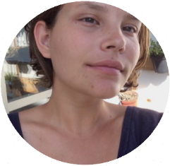

• BBC News Brasil
• Jornal Nexo
• A Pública
• Portal UAI
• Hand Talk

Eu sempre gostei muito de idealizar e criar projetos visuais
e por isso flerto bastante com a área do Design. Em paralelo,
recentemente "descobri" a programação e tive certeza de que
quero seguir na área, principalmente atuando como Front-End.
Estou iniciando meus estudos agora e esse é o primeiro código
da minha vida ッ de muitos que virão! Pois já percebi que quanto
mais eu estudo, mais vontade eu tenho de explorar, testar e criar.
Linkedin | GitHub
Deixe aqui suas sugestões e comentários. ❤